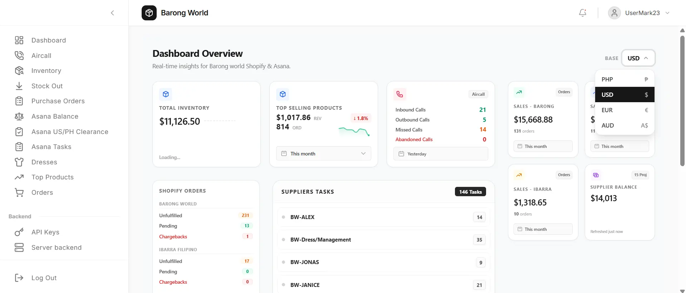

Business operations platform
Barong
World
One dashboard for inventory, commerce, tasks, and calls.
Real-time operational dashboard connecting inventory, Shopify orders, Asana, and Aircall.
Built and improved an internal dashboard that brings business-critical workflows into one interface. The system combines inventory visibility, real-time Shopify order data, Asana task and balance workflows, and Aircall activity so operations can be monitored without switching between separate tools.
Inventory / Shopify / Asana / Aircall / Real-time data / Responsive dashboard
